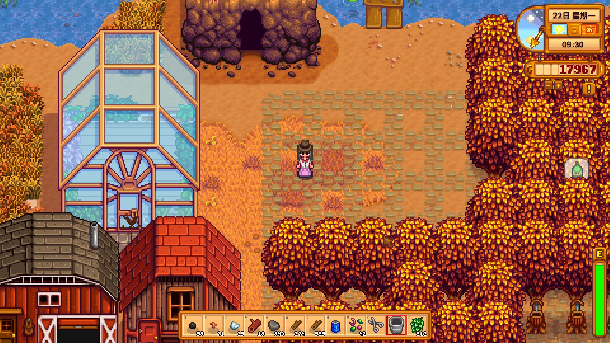
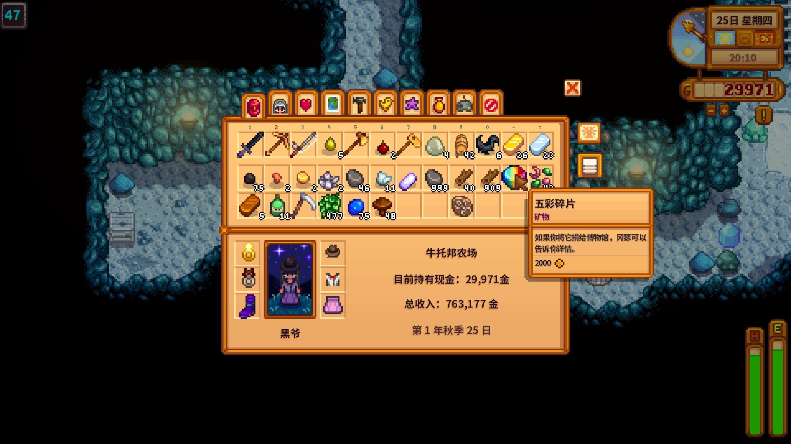
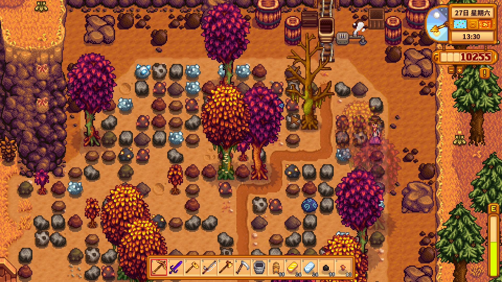
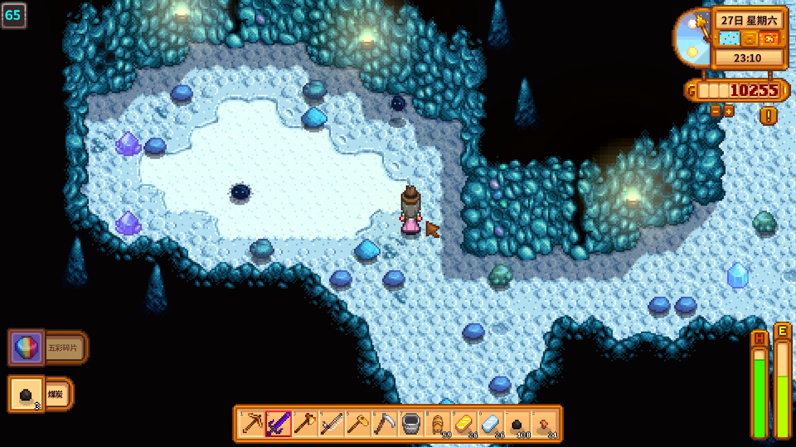
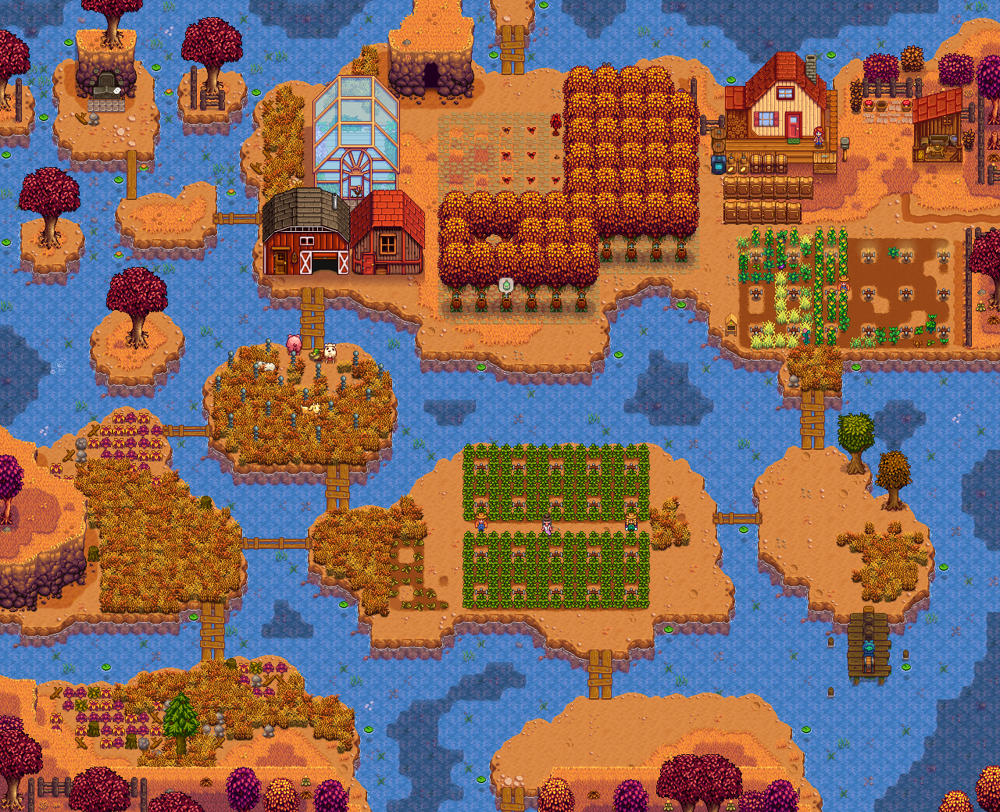

光写文字太枯燥了，所以就看图说话吧。因为是先开的档才临时起意要写日记，所以开始是第一年秋末。
这个档第一年是草莓啤酒花酿酒。
夏季的时候规划橡树，感觉橡树太大了，看不清树种，于是想让随机生的树种都落到原本预定的地方，就铺了小径……没想到树种可以顶小径，这压根没用……下次再来的话，我一定从后往前种……
接了杀蝙蝠的特别任务，在埋头苦干的时候爆五彩了！难道我是欧皇？0.05%欸！
温室里种的冬季种子终于种出来了，第一次见采石场，这是一年的积累吗？这么多矿，采了一天没采完，都有点不想铺地板了。但是茅台镇是不可回避的宿命，酒厂，启动！
什么情况，怎么两天内又出？还是在差点赶不上万灵节的时间点。还好最后踩点到场。
第一年秋留念。细心的朋友会发现我蔓越莓不是熟的，没错我漏收了一次……血亏QAQ